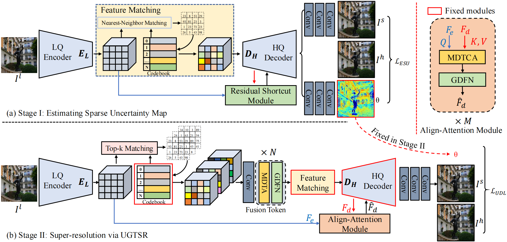
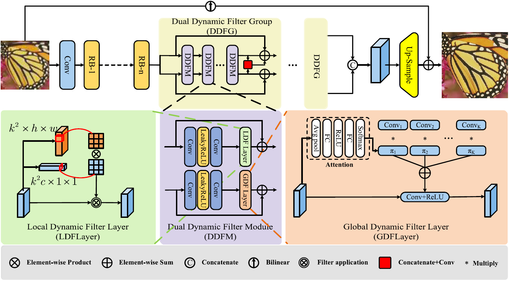
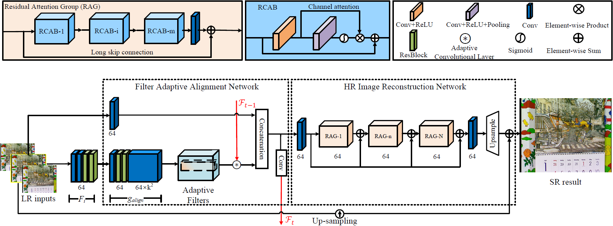
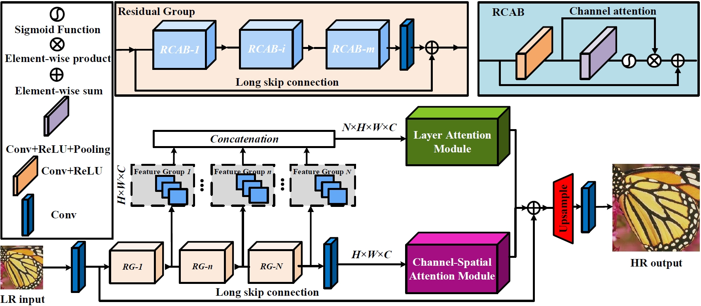

My research focuses on low-level computer vision, including image super-resolution, image restoration, and image generation. I received my Ph.D. from the Media Computing Lab at Nankai University. I am currently a Lecturer at the College of Mathematics and Computer Science, Shantou University.
News
- 2026.02: One paper accepted to IEEE Transactions on Image Processing (TIP). [Paper]
- 2025.07: Joined Shantou University as a Lecturer at the College of Mathematics and Computer Science.
- 2025.06: Received Ph.D. from Nankai University.
- 2024.07: One paper accepted to IEEE Transactions on Image Processing (TIP). [Paper]
- 2022.02: One paper accepted to IEEE Transactions on Image Processing (TIP). [Paper]
- 2020.08: One paper accepted to ECCV 2020. [Paper]
Publications
Selected Publications

Weilei Wen, Tianyi Zhang, Qianqian Zhao, Zhaohui Zheng, Chunle Guo, Xiuli Shao, Chongyi Li
IEEE Transactions on Image Processing (TIP) 2026 | GitHub


Adaptive Blind Super-Resolution Network for Spatial-Specific and Spatial-Agnostic Degradations
Weilei Wen, Chunle Guo, Wenqi Ren, Hongpeng Wang, Xiuli Shao
IEEE Transactions on Image Processing (TIP) 2024

Video Super-Resolution via a Spatio-Temporal Alignment Network
Weilei Wen, Wenqi Ren, Yinghuan Shi, Yunfeng Nie, Jingang Zhang, Xiaochun Cao
IEEE Transactions on Image Processing (TIP) 2022 | GitHub


Single Image Super-Resolution via a Holistic Attention Network
Ben Niu*, Weilei Wen*, Wenqi Ren, Xiangde Zhang, Lianping Yang, Shuzhen Wang, Kaihao Zhang, Xiaochun Cao, Haifeng Shen ( * Equal Contribution )
ECCV 2020 | GitHub

Awards & Honors
-
Journal Papers: Published 3 papers in IEEE TIP (CCF-A, SCI Q1, IF: 13.7).
-
Conference Papers: Published 1 paper in ECCV (CCF-B).
-
Ph.D. in Computer Science and Technology, Nankai University (2025)
-
Champion, 2022 MegCup RAW Image Denoising Competition (Apr. 2022) Code